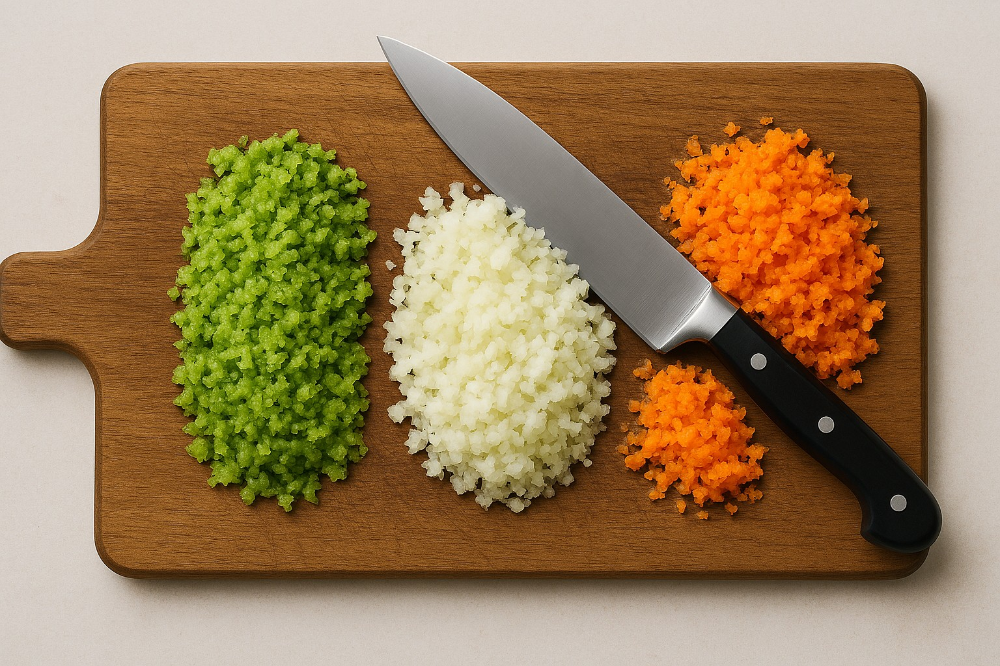
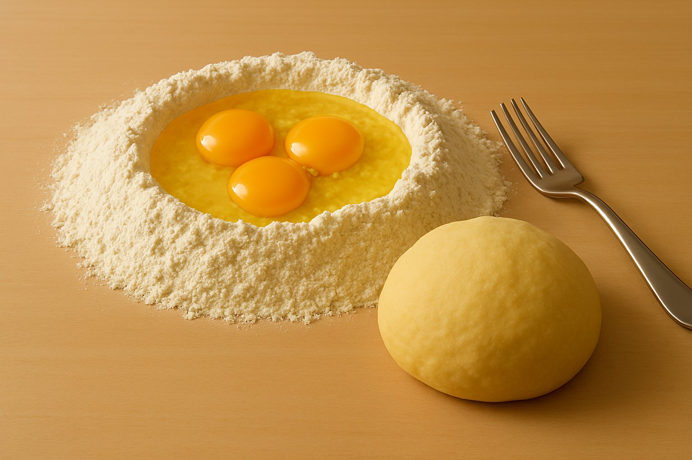
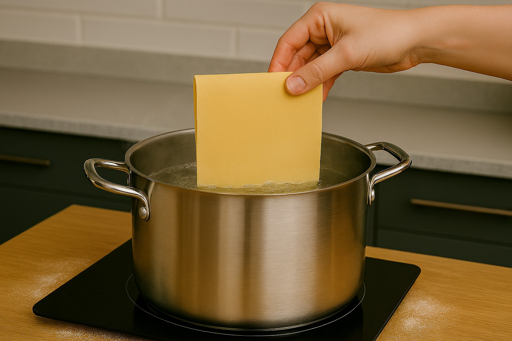
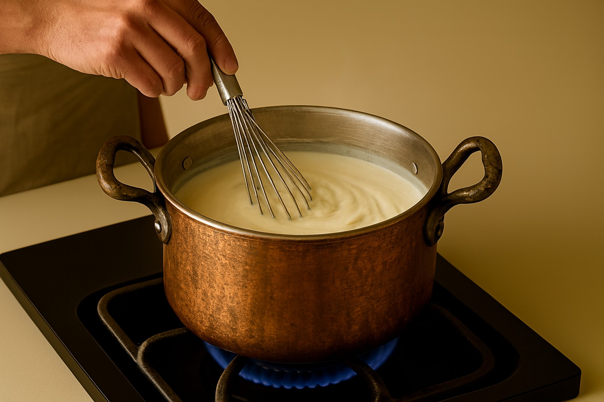
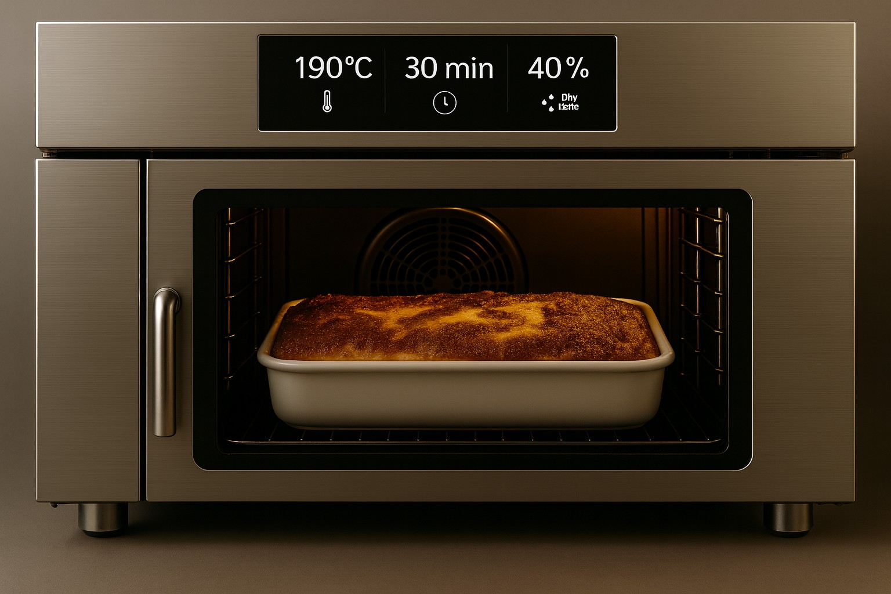

Oggi vi propongo le lasagne alla bolognese, un piatto ricco formatosi da sfoglie all’uovo verdi grezze con gli spinaci, ragù alla bolognese cotto minimo 4 h come vuole la tradizione familiare e conviviale, besciamella e il Parmigiano Reggiano DOP grattugiato.
Tagliate ad haché le carote, le cipolle e le coste di sedano e fate rosolare con l’olio il soffritto.


Successivamente aggiungete la carne e anch’essa la fate rosolare.

Poi aggiungete il vino e lo fate evaporare a fiamma alta.

In seguito aggiungete la passata di pomodoro, il sale, il pepe, l’acqua e lasciate cuocere con il coperchio per 4 h.

Nel frattempo fate la sfoglia: in una spianatoia mettete in una fontana larga le due farine, all’interno rompete le uova, aggiungete il sale, gli spinaci e amalgamate con una forchetta fino a che il composto diventa compatto. Dopodiché lo mettete a riposare in frigorifero per 30 minuti per far rilassare il glutine.


Passati i 30 minuti stendetela con la sfogliatrice dallo spessore più largo che nel caso mio è 9 al 5.

Stesa la pasta formate dei rettangoli grandi più o meno della vostra pirofila. E lasciatela asciugare per 1h.

Conseguentemente mettete a bollire dell’acqua, la salata e calate una sfoglia per volta cuocendo per 1 minuto giusto per togliere ad esse il gusto della farina.

Passato il minuto mettete le sfogliette in acqua e ghiaccio per bloccare la cottura e mettetele ad asciugare in un canovaccio.

Mentre le sfoglie asciugano preparate la besciamella: in una casseruola fate sciogliere il burro, aggiungete la farina di getto e formate il Roux mescolando il burro sciolto con la farina, poi unite il latte a step, la noce moscata, un pizzico di sale, e continuate a mescolare con una frusta finché la besciamella non fissi il bollore.

Infine grattugiate il Parmigiano Reggiano DOP.

Ora che abbiamo tutti gli ingredienti componiamo la lasagna in una pirofila sporchiamo con la besciamella e il ragù, mettiamo alcune sfoglie e poi facciamo ragù, besciamella, formaggio, e ripetiamo gli strati per 3-4 volte, ovviamente non siate tirchi e taccagni con il ragù e la besciamella, la lasagna non deve venire sciupata sciupata ma deve venire fuori un piatto ricco mi ci ficco.

E dopo 5 ore e mezza di preparazione siete giunti alla parte finale: infornare le lasagne in forno preriscaldato a 190 °C per 30 minuti. Et voilà.